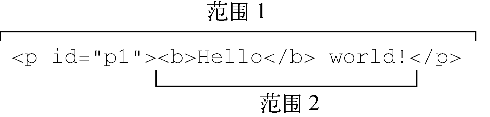
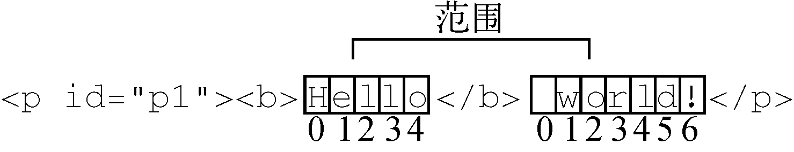
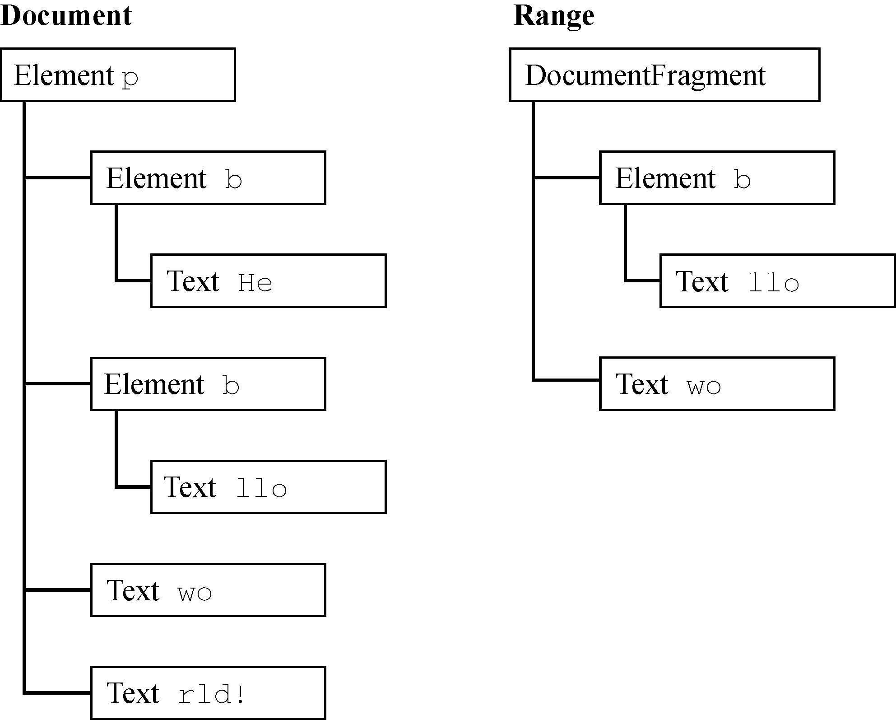
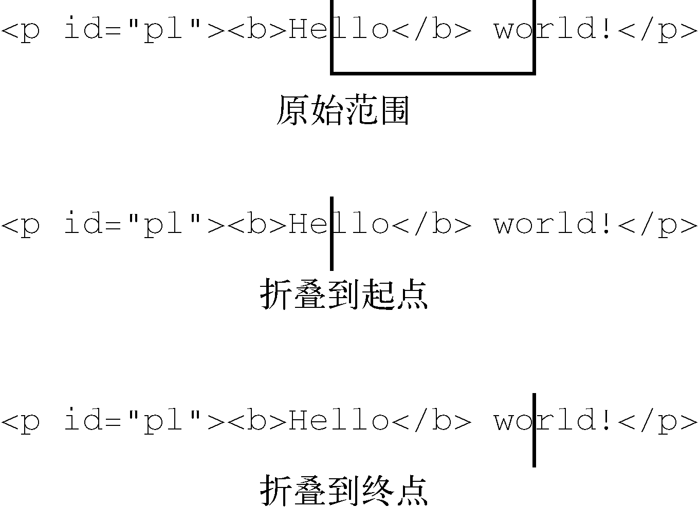
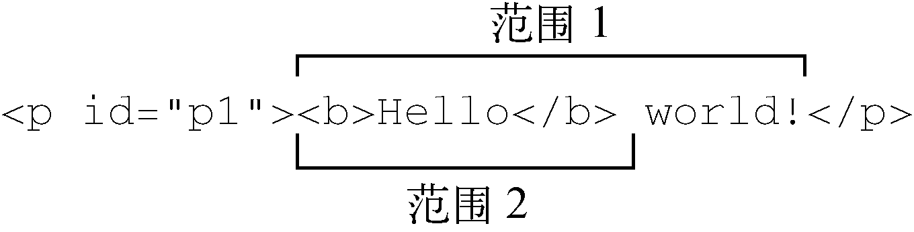

为了支持对页面更细致的控制，DOM2 Traversal and Range模块定义了范围接口。范围可用于在文档中选择内容，而不用考虑节点之间的界限。（选择在后台发生，用户是看不到的。）范围在常规DOM操作的粒度不够时可以发挥作用。
DOM2在Document类型上定义了一个createRange()方法，暴露在document对象上。使用这个方法可以创建一个DOM范围对象，如下所示：
let range = document.createrange();与节点类似，这个新创建的范围对象是与创建它的文档关联的，不能在其他文档中使用。然后可以使用这个范围在后台选择文档特定的部分。创建范围并指定它的位置之后，可以对范围的内容执行一些操作，从而实现对底层DOM树更精细的控制。
每个范围都是Range类型的实例，拥有相应的属性和方法。下面的属性提供了与范围在文档中位置相关的信息。
startContainer，范围起点所在的节点（选区中第一个子节点的父节点）。startOffset，范围起点在startContainer中的偏移量。如果startContainer是文本节点、注释节点或CData区块节点，则startOffset指范围起点之前跳过的字符数；否则，表示范围中第一个节点的索引。endContainer，范围终点所在的节点（选区中最后一个子节点的父节点）。endOffset，范围起点在startContainer中的偏移量（与startOffset中偏移量的含义相同）。commonAncestorContainer，文档中以startContainer和endContainer为后代的最深的节点。这些属性会在范围被放到文档中特定位置时获得相应的值。
通过范围选择文档中某个部分最简单的方式，就是使用selectNode()或selectNodeContents()方法。这两个方法都接收一个节点作为参数，并将该节点的信息添加到调用它的范围。selectNode()方法选择整个节点，包括其后代节点，而selectNodeContents()只选择节点的后代。假设有如下HTML：
<!doctype html>
<html>
<body>
<p id="p1"><b>hello</b> world!</p>
</body>
</html>以下JavaScript代码可以访问并创建相应的范围：
let range1 = document.createrange(),
range2 = document.createrange(),
p1 = document.getelementbyid("p1");
range1.selectnode(p1);
range2.selectnodecontents(p1);例子中的这两个范围包含文档的不同部分。range1包含<p>元素及其所有后代，而range2包含<b>元素、文本节点"Hello"和文本节点" world!"，如图16-7所示。

图 16-7
调用selectNode()时，startContainer、endContainer和commonAncestorContainer都等于传入节点的父节点。在这个例子中，这几个属性都等于document.body。startOffset属性等于传入节点在其父节点childNodes集合中的索引（在这个例子中，startOffset等于1，因为DOM的合规实现把空格当成文本节点），而endOffset等于startOffset加1（因为只选择了一个节点）。
在调用selectNodeContents()时，startContainer、endContainer和commonAncestor Container属性就是传入的节点，在这个例子中是<p>元素。startOffset属性始终为0，因为范围从传入节点的第一个子节点开始，而endOffset等于传入节点的子节点数量（node.child Nodes.length），在这个例子中等于2。
在像上面这样选定节点或节点后代之后，还可以在范围上调用相应的方法，实现对范围中选区的更精细控制。
setStartBefore(refNode)，把范围的起点设置到
refNode
之前，从而让
refNode
成为选区的第一个子节点。startContainer属性被设置为refNode.parentNode，而startOffset属性被设置为refNode在其父节点childNodes集合中的索引。setStartAfter(refNode)，把范围的起点设置到
refNode
之后，从而将
refNode
排除在选区之外，让其下一个同胞节点成为选区的第一个子节点。startContainer属性被设置为refNode.parentNode，startOffset属性被设置为refNode在其父节点childNodes集合中的索引加1。setEndBefore(refNode)，把范围的终点设置到
refNode
之前，从而将
refNode
排除在选区之外、让其上一个同胞节点成为选区的最后一个子节点。endContainer属性被设置为refNode.parentNode，endOffset属性被设置为refNode在其父节点childNodes集合中的索引。setEndAfter(refNode)，把范围的终点设置到
refNode
之后，从而让
refNode
成为选区的最后一个子节点。endContainer属性被设置为refNode.parentNode，endOffset属性被设置为
refNode
在其父节点childNodes集合中的索引加1。调用这些方法时，所有属性都会自动重新赋值。不过，为了实现复杂的选区，也可以直接修改这些属性的值。
要创建复杂的范围，需要使用setStart()和setEnd()方法。这两个方法都接收两个参数：参照节点和偏移量。对setStart()来说，参照节点会成为startContainer，而偏移量会赋值给startOffset。对setEnd()而言，参照节点会成为endContainer，而偏移量会赋值给endOffset。
使用这两个方法，可以模拟selectNode()和selectNodeContents()的行为。比如：
let range1 = document.createrange(),
range2 = document.createrange(),
p1 = document.getelementbyid("p1"),
p1index = -1,
i,
len;
for (i = 0, len = p1.parentnode.childnodes.length; i < len; i++) {
if (p1.parentnode.childnodes[i] === p1) {
p1index = i;
break;
}
}
range1.setstart(p1.parentnode, p1index);
range1.setend(p1.parentnode, p1index + 1);
range2.setstart(p1, 0);
range2.setend(p1, p1.childnodes.length);注意，要选择节点（使用range1），必须先确定给定节点（p1）在其父节点childNodes集合中的索引。而要选择节点的内容（使用range2），则不需要这样计算，因为可以直接给setStart()和setEnd()传默认值。虽然可以模拟selectNode()和selectNodeContents()，但setStart()和setEnd()真正的威力还是选择节点中的某个部分。
假设我们想通过范围从前面示例中选择从"Hello"中的"llo"到" world!"中的"o"的部分。很简单，第一步是取得所有相关节点的引用，如下面的代码所示：
let p1 = document.getelementbyid("p1"),
hellonode = p1.firstchild.firstchild,
worldnode = p1.lastchild文本"Hello"其实是<p>的孙子节点，因为它是<b>的子节点。为此可以使用p1.firstChild取得<b>，而使用p1.firstChild.firstChild取得"Hello"这个文本节点。文本节点" world!"是<p>的第二个（也是最后一个）子节点，因此可以使用p1.lastChild来取得它。然后，再创建范围，指定其边界，如下所示：
let range = document.createrange();
range.setstart(hellonode, 2);
range.setend(worldnode, 3);因为选区起点在"Hello"中的字母"e"之后，所以要给setStart()传入helloNode和偏移量2（"e"后面的位置，"H"的位置是0）。要设置选区终点，则要给setEnd()传入worldNode和偏移量3，即不属于选区的第一个字符的位置，也就是"r"的位置3（位置0是一个空格）。图16-8展示了范围对应的选区。

图 16-8
因为helloNode和worldNode是文本节点，所以它们会成为范围的startContainer和endContainer，这样startOffset和endOffset实际上表示每个节点中文本字符的位置，而不是子节点的位置（传入元素节点时的情形）。而commonAncestorContainer是<p>元素，即包含这两个节点的第一个祖先节点。
当然，只选择文档中的某个部分并不是特别有用，除非可以对选中部分执行操作。
创建范围之后，浏览器会在内部创建一个文档片段节点，用于包含范围选区中的节点。为操作范围的内容，选区中的内容必须格式完好。在前面的例子中，因为范围的起点和终点都在文本节点内部，并不是完好的DOM结构，所以无法在DOM中表示。不过，范围能够确定缺失的开始和结束标签，从而可以重构出有效的DOM结构，以便后续操作。
仍以前面例子中的范围来说，范围发现选区中缺少一个开始的<b>标签，于是会在后台动态补上这个标签，同时还需要补上封闭"He"的结束标签</b>，结果会把DOM修改为这样：
<p><b>he</b><b>llo</b> world!</p>而且，" world!"文本节点会被拆分成两个文本节点，一个包含" wo"，另一个包含"rld!"。最终的DOM树，以及范围对应的文档片段如图16-9所示。

图 16-9
这样创建了范围之后，就可以使用很多方法来操作范围的内容。（注意，范围对应文档片段中的所有节点，都是文档中相应节点的指针。）
第一个方法最容易理解和使用：deleteContents()。顾名思义，这个方法会从文档中删除范围包含的节点。下面是一个例子：
let p1 = document.getelementbyid("p1"),
hellonode = p1.firstchild.firstchild,
worldnode = p1.lastchild,
range = document.createrange();
range.setstart(hellonode, 2);
range.setend(worldnode, 3);
range.deletecontents();执行上面的代码之后，页面中的HTML会变成这样：
<p><b>he</b>rld!</p>因为前面介绍的范围选择过程通过修改底层DOM结构保证了结构完好，所以即使删除范围之后，剩下的DOM结构照样是完好的。
另一个方法extractContents()跟deleteContents()类似，也会从文档中移除范围选区。但不同的是，extractContents()方法返回范围对应的文档片段。这样，就可以把范围选中的内容插入文档中其他地方。来看一个例子：
let p1 = document.getelementbyid("p1"),
hellonode = p1.firstchild.firstchild,
worldnode = p1.lastchild,
range = document.createrange();
range.setstart(hellonode, 2);
range.setend(worldnode, 3);
let fragment = range.extractcontents();
p1.parentnode.appendchild(fragment);这个例子提取了范围的文档片段，然后把它添加到文档<body>元素的最后。（别忘了，在把文档片段传给appendChild()时，只会添加片段的子树，不包含片段自身。）结果就会得到如下HTML：
<p><b>he</b>rld!</p>
<b>llo</b> wo
[p595代码三]如果不想把范围从文档中移除，也可以使用cloneContents()创建一个副本，然后把这个副本插入到文档其他地方。比如：
let p1 = document.getelementbyid("p1"),
hellonode = p1.firstchild.firstchild,
worldnode = p1.lastchild,
range = document.createrange();
range.setstart(hellonode, 2);
range.setend(worldnode, 3);
let fragment = range.clonecontents();
p1.parentnode.appendchild(fragment);这个方法跟extractContents()很相似，因为它们都返回文档片段。主要区别是cloneContents()返回的文档片段包含范围中节点的副本，而非实际的节点。执行上面操作之后，HTML页面会变成这样：
<p><b>hello</b> world!</p>
<b>llo</b> wo此时关键是要知道，为保持结构完好而拆分节点的操作，只有在调用前述方法时才会发生。在DOM被修改之前，原始HTML会一直保持不变。
上一节介绍了移除和复制范围的内容，本节来看一看怎么向范围中插入内容。使用insertNode()方法可以在范围选区的开始位置插入一个节点。例如，假设我们想在前面例子中的HTML中插入如下HTML：
<span style="color: red">inserted text</span>可以使用下列代码：
let p1 = document.getelementbyid("p1"),
hellonode = p1.firstchild.firstchild,
worldnode = p1.lastchild,
range = document.createrange();
range.setstart(hellonode, 2);
range.setend(worldnode, 3);
let span = document.createelement("span");
span.style.color = "red";
span.appendchild(document.createtextnode("inserted text"));
range.insertnode(span);运行上面的代码会得到如下HTML代码：
<p id="p1"><b>he<span style="color: red">inserted text</span>llo</b> world</p>注意，<span>正好插入到"Hello"中的"llo"之前，也就是范围选区的前面。同时，也要注意原始的HTML并没有添加或删除<b>元素，因为这里并没有使用之前提到的方法。使用这个技术可以插入有用的信息，比如在外部链接旁边插入一个小图标。
除了向范围中插入内容，还可以使用surroundContents()方法插入包含范围的内容。这个方法接收一个参数，即包含范围内容的节点。调用这个方法时，后台会执行如下操作：
(1) 提取出范围的内容；
(2) 在原始文档中范围之前所在的位置插入给定的节点；
(3) 将范围对应文档片段的内容添加到给定节点。
这种功能适合在网页中高亮显示某些关键词，比如：
let p1 = document.getelementbyid("p1"),
hellonode = p1.firstchild.firstchild,
worldnode = p1.lastchild,
range = document.createrange();
range.selectnode(hellonode);
let span = document.createelement("span");
span.style.backgroundcolor = "yellow";
range.surroundcontents(span);执行以上代码会以黄色背景高亮显示范围选择的文本。得到的HTML如下所示：
<p><b><span style="background-color:yellow">hello</span></b> world!</p>为了插入<span>元素，范围中必须包含完整的DOM结构。如果范围中包含部分选择的非文节点，这个操作会失败并报错。另外，如果给定的节点是Document、DocumentType或DocumentFragment类型，也会导致抛出错误。
如果范围并没有选择文档的任何部分，则称为折叠（collapsed）。折叠范围有点类似文本框：如果文本框中有文本，那么可以用鼠标选中以高亮显示全部文本。这时候，如果再单击鼠标，则选区会被移除，光标会落在某两个字符中间。而在折叠范围时，位置会被设置为范围与文档交界的地方，可能是范围选区的开始处，也可能是结尾处。图16-10展示了范围折叠时会发生什么。

图 16-10
折叠范围可以使用collapse()方法，这个方法接收一个参数：布尔值，表示折叠到范围哪一端。true表示折叠到起点，false表示折叠到终点。要确定范围是否已经被折叠，可以检测范围的collapsed属性：
range.collapse(true); // 折叠到起点
console.log(range.collapsed); // 输出true测试范围是否被折叠，能够帮助确定范围中的两个节点是否相邻。例如有以下HTML代码：
<p id="p1">paragraph 1</p><p
id="p2">paragraph 2</p>如果事先并不知道标记的结构（比如自动生成的标记），则可以像下面这样创建一个范围：
let p1 = document.getelementbyid("p1"),
p2 = document.getelementbyid("p2"),
range = document.createrange();
range.setstartafter(p1);
range.setstartbefore(p2);
console.log(range.collapsed); // true在这种情况下，创建的范围是折叠的，因为p1后面和p2前面没有任何内容。
如果有多个范围，则可以使用compareBoundaryPoints()方法确定范围之间是否存在公共的边界（起点或终点）。这个方法接收两个参数：要比较的范围和一个常量值，表示比较的方式。这个常量参数包括：
Range.START_TO_START（0），比较两个范围的起点；Range.START_TO_END（1），比较第一个范围的起点和第二个范围的终点；Range.END_TO_END（2），比较两个范围的终点；Range.END_TO_START（3），比较第一个范围的终点和第二个范围的起点。
compareBoundaryPoints()方法在第一个范围的边界点位于第二个范围的边界点之前时返回-1，在两个范围的边界点相等时返回0，在第一个范围的边界点位于第二个范围的边界点之后时返回1。来看下面的例子：
let range1 = document.createrange();
let range2 = document.createrange();
let p1 = document.getelementbyid("p1");
range1.selectnodecontents(p1);
range2.selectnodecontents(p1);
range2.setendbefore(p1.lastchild);
console.log(range1.compareboundarypoints(range.start_to_start, range2)); // 0
console.log(range1.compareboundarypoints(range.end_to_end, range2)); // 1在这段代码中，两个范围的起点是相等的，因为它们都是selectNodeContents()默认返回的值。因此，比较二者起点的方法返回0。不过，因为range2的终点被使用setEndBefore()修改了，所以导致range1的终点位于range2的终点之后（见图16-11），结果这个方法返回了1。

图 16-11
调用范围的cloneRange()方法可以复制范围。这个方法会创建调用它的范围的副本：
let newrange = range.clonerange();新范围包含与原始范围一样的属性，修改其边界点不会影响原始范围。
在使用完范围之后，最好调用detach()方法把范围从创建它的文档中剥离。调用detach()之后，就可以放心解除对范围的引用，以便垃圾回收程序释放它所占用的内存。下面是一个例子：
range.detach(); // 从文档中剥离范围
range = null; // 解除引用这两步是最合理的结束使用范围的方式。剥离之后的范围就不能再使用了。